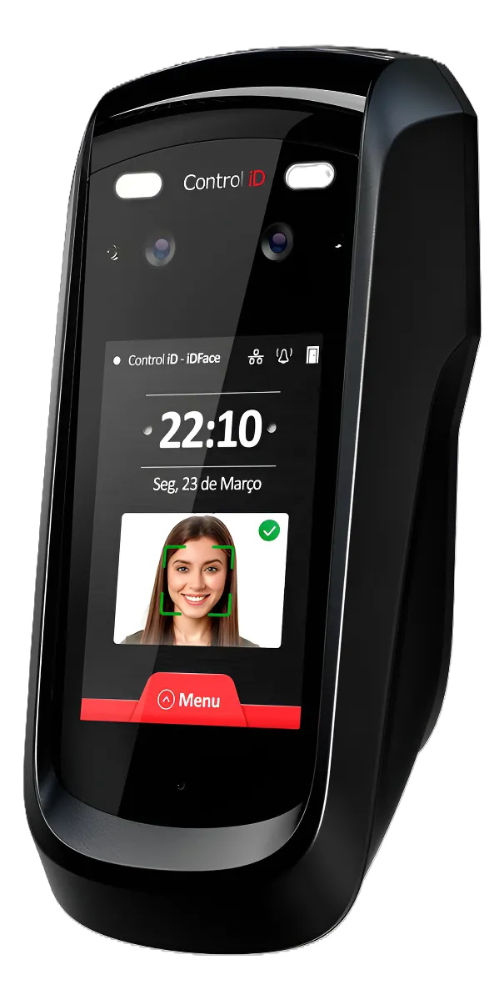
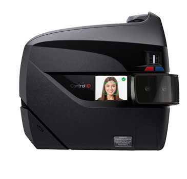

Conheça a Solução Completa de Controle de Ponto

Software de Controle de Ponto
O ifPonto é um sistema web de controle de ponto que otimiza processos de RH e reduz custos operacionais para a empresa.

App de Ponto Mobile
O App de Ponto permite marcações com Geolocalização e Reconhecimento Facial. Oferece transparência total com Espelho de Ponto e comprovante por e-mail.

Registrador de Ponto (iDFace Max)
O iDFace Max oferece Máxima Velocidade e Capacidade. Combina rápido reconhecimento facial com alto armazenamento, sendo ideal para grandes empresas que exigem robustez em seu REP-P.

Registrador de Ponto (iDFace)
O iDFace oferece Reconhecimento Facial Eficiente. Simplifica o registro de ponto, garantindo agilidade e segurança na marcação, dispensando cartões e senhas.
